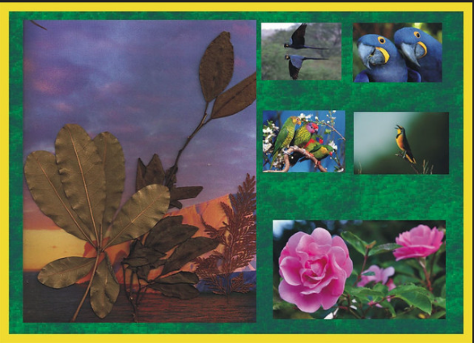
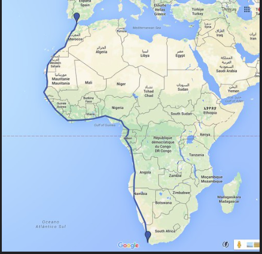

1. Comenzamos
 ¿Has escuchado hablar de la malvada Narcisa Vulcana?
¿Has escuchado hablar de la malvada Narcisa Vulcana?
Debes saber que esta odiosa villana detesta la paz, la armonía, la justicia, la ecología. Causa caos y problemas por donde pasa. Destruye la capa de ozono, propicia el calentamiento global, quema escuelas en el tercer mundo, incentiva la guerra y la pobreza en todas partes. Ten cuidado con su presencia, es muy poderosa y absolutamente terrorífica.
¿Podrás hacerlo sin ayuda? ¿Necesitas de tu equipo?
Lectura facilitada
¿Sabes quién es la mala Narcisa Vulcana?
Es una odiosa villana.
A Narcisa Vulcana no le gusta la paz.
A Narcisa Vulcana no le gusta la justicia.
A Narcisa Vulcana no le gusta la ecología.
Narcisa Vulcana da problemas donde va.
Narcisa Vulcana destruye la capa de ozono.
Narcisa Vulcana propicia el calentamiento global.
Narcisa Vulcana quema escuelas en África.
Narcisa Vulcana crea guerras.
Narcisa Vulcana crea pobreza en todo el mundo.
Ten cuidado cuando tú la veas.
Narcisa Vulcana es muy poderosa.
Narcisa Vulcana es muy mala.
Definición
Ciencia que estudia los seres vivos como habitantes de un medio.
Ejemplo
Me gusta mucho la ecología.
Definición
Es una capa que envuelve la Tierra impidiendo que los rayos solares y los rayos ultravioleta lleguen a los seres vivos.
Ejemplo
Debemos cuidar que no se destruya la capa de ozono.
Definición
Es el aumento a largo plazo de la temperatura media del clima de la Tierra.
Ejemplo
El calentamiento global es un gran problema de la humanidad.
Definición
Es el tercer continente más extenso de la Tierra.
Ejemplo
Las personas de África se llaman africanos.
 Definición
Definición
Persona mala.
Ejemplo
Joker es una persona villana.
Para derrotarla vamos a unir nuestras fuerzas. Para ello, trabajaremos en equipo. Con este fin se formarán grupos, siguiendo las indicaciones del profesor. En cada equipo se nombrará un portavoz, que será el encargado de exponer la ideas y decisiones del grupo, al resto de la clase. Trabajaremos de forma cooperativa.
Lectura facilitada
Para destruir a Narcisa Vulcana vas a unir tus fuerzas en equipo.
Vais a formar grupos.
En grupo vas a seguir las indicaciones del profesor o profesora.
Cada equipo tiene un portavoz.
El portavoz dice las ideas y decisiones del grupo a los demás equipos de la clase.
 Definición
Definición
Palabra, gesto, señal, etc., que sirve para indicar algo.
Ejemplo
Me han dado indicaciones para terminar la actividad.

 Definición
Definición Aquí tienes un video que plantea algunos problemas que afectan a nuestro mundo, país, ciudad, barrio, escuela. Te propongo que visualices el mismo con mucha atención. Podrás comprobar cómo la
Aquí tienes un video que plantea algunos problemas que afectan a nuestro mundo, país, ciudad, barrio, escuela. Te propongo que visualices el mismo con mucha atención. Podrás comprobar cómo la  Definición
Definición